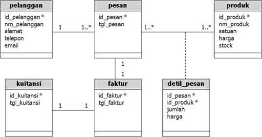

Merancang database merupakan hal yang pertama kali harus dilakukan sebelum membuat suatu aplikasi berbasis database. Rancangan database yang baik akan menentukan seberapa baik sebuah aplikasi dibangun. Orang yang bertanggung jawab dalam merancang database biasanya disebut sebagai seorang sistem analis.
Berikut ini contoh sederhana sebuah rancangan database dalam pada Sistem Pemesanan Barang (ordering system). Rancangan database disajikan dalam bentuk class diagram.
SQL merupakan singkatan dari Structured Query Language. SQL atau juga sering disebut sebagai query merupakan suatu bahasa (language) yang digunakan untuk mengakses database. SQL dikenalkan pertama kali dalam IBM pada tahun 1970 dan sebuah standar ISO dan ANSII ditetapkan untuk SQL. Standar ini tidak tergantung pada mesin yang digunakan (IBM, Microsoft atau Oracle). Hampir semua software database mengenal atau mengerti SQL. Jadi, perintah SQL pada semua software database hampir sama.
Terdapat 3 jenis perintah SQL, yaitu :
DDL (Data Definition Language) DDL merupakan perintah SQL yang berhubungan dengan pendefinisian suatu struktur database, dalam hal ini database dan table. Beberapa perintah dasar yang termasuk DDL ini antara lain :
DML (Data Manipulation Language) DML merupakan perintah SQL yang berhubungan dengan manipulasi atau pengolahan data atau record dalam table. Perintah SQL yang termasuk dalam DML antara lain :
DCL (Data Control Language) DCL merupakan perintah SQL yang berhubungan dengan manipulasi user dan hak akses (priviledges). Perintah SQL yang termasuk dalam DCL antara lain :